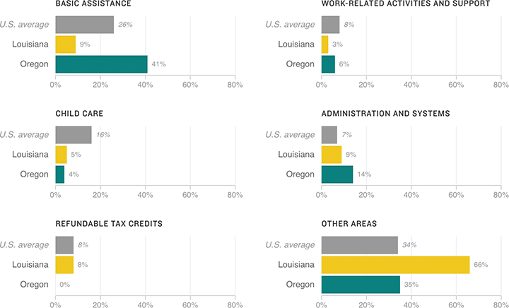

How Louisiana And Oregon Spent Their Welfare Funds In 2014
A Center on Budget and Policy Priorities analysis found that, on average, states spent about half of their TANF funds on benefits, job programs and child care. Some states have used their TANF funds to also expand or fund other state programs.

Notes
— Numbers may not total 100 because of rounding.
— “Other areas” may include short-term aid, child welfare services, and programs to promote pregnancy prevention and two-parent families.